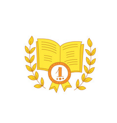

Achievements

Swimming
- HKJC swimming gala 2015 girls champion
- HKJC swimming gala 2016 girls champion
- HKJC swimming gala 2017 girls champion
- 2017/2018 school year girls swimming champion
- won bronze medal in 25m breastroke swimming girls 2018/2019 school year
- won silver medal in 25m freestyle swimming girls 2018/2019 school year
- won a gold medal at the Aberdeen Marina Club Swimming Gala
Fencing
- won a gold trophy in fencing for the 2nd Hong Kong Kindergarten Inter-School Fencing Championships 2016 girls category
- awarded 2 gold medals at the Fencing Sport Academy for fencing
Academic Awards
- awarded a merit for the 2015 Hong Kong Rising Sun Cup English Speech Competition
- awarded a merit for the 2015 Hong Kong Rising Sun Cup Mandarin Speech Competition
- awarded a certificate for having the best score for maths throughout the 2016/2017 school year
- awarded a certificate for outstanding behavious for maths throughout the 2016/2017 school year
- awarded second place in the School Chinese Writing Competition 2017/2018 school year
- awarded a second place in the School English Writing Competition 2017/2018 school year
- awarded a certificate of merit for 2017/2018 school year
- awarded a certificate of merit for 2018/2019 school year
- awarded a certificate of merit for 2019/2020 school year
- awarded Bronze Honour for the Asia International Mathematical Olympiad Open Contest Semi-Final in 2021
- awarded a certificate of merit for 2021/2022 school year
Piano
- awarded the ABRSM Level 1 Award in Graded Examination in Music Performance (Grade 3) and passed with distinction in 2019
- awarded the ABRSM Level 2 Award in Graded Examination in Music Performance (Grade 5) and passed with merit in 2021
- awarded the ABRSM Level 2 Certificate in Graded Examination in Music Theory (Grade 5) and passed with distinction in 2022
Others
- won two gold medals in Ladybug Bowling Team
- participated in Junior Development Programme 2017/2018 golf
- participated in RUN WITH KAKAO FRIENDS FIGHTING 2020 charity
- awarded a certificate of completition of the programme "Shine Like Shakespeare: Read. Write. Perform! (Primary)" in 2020
- awarded a certificate of commendation from The Forensics Company for solving the ARCH Murder Case in 2021
- awarded a certificate of achievement for successfully completing St. Paul's Co-educational College Primary School Outward Bound Programme in 2021